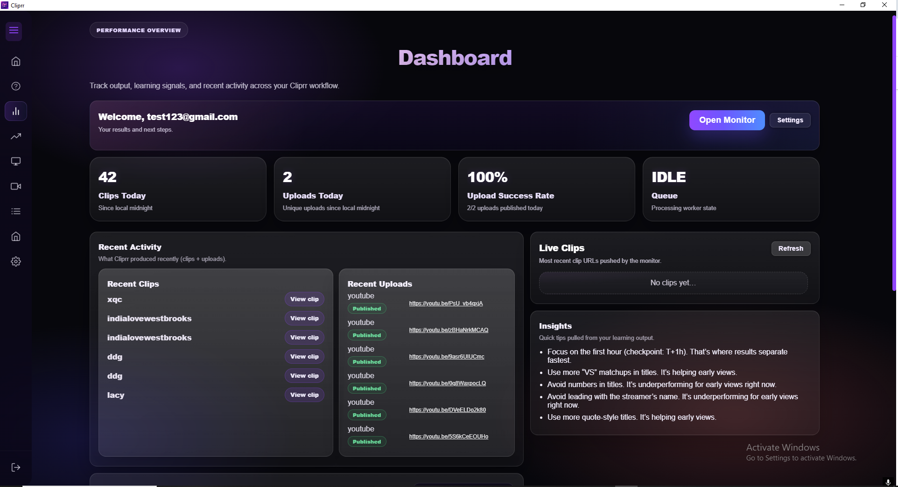
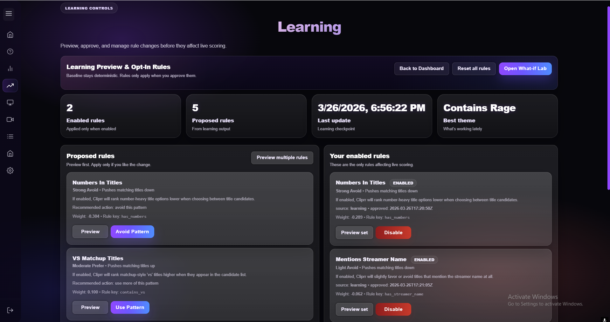
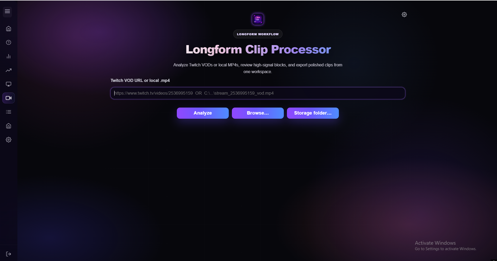

You can see which streams are running and which monitor instances are active during the session.
Platform overview
Cliprr is a desktop clipping platform with visible working parts.
The useful part is not an abstract automation claim. It is that you can see where live monitoring, trigger activity, learning review, output tracking, and saved clips are handled.
Monitoring workspace
Live monitoring exposes the controls that matter.
Threshold tuning
Session state
Cliprr shows streamer-specific fields, cooldowns, thresholds, and active monitor cards in a dense workspace made for repeat use.

What this proves
The monitor page already shows how clip behavior is controlled.
One screen shows active monitor cards, parameter changes, cooldown behavior, and live session state without pretending the workflow is just a single export button.
Clip frequency can be tuned instead of being left to a vague default that clips too often or not enough.
The workspace holds enough state and controls to feel like a tool that stays open during real use.
Operational view
The dashboard keeps output and activity visible.
Output counts
Recent uploads
The dashboard keeps output counts, recent activity, queue status, and review signals visible after clips have been created.

Learning controls
Rule changes are reviewable before they affect scoring.
Rule preview
Opt-in changes
Learning suggestions stay on a review surface first, so scoring changes can be seen before they affect live clip behavior.

Reserved walkthrough media
Platform walkthrough capture placeholder
This should later become a recorded walkthrough that shows monitor activity, dashboard review, learning suggestions, and library management in sequence.
Output management
Saved clips stay reviewable after generation.
The library is where saved outputs stay sortable, reviewable, and removable after generation instead of becoming lost exports.

Longform processing
Cliprr supports VOD and local file review too.
When the live pass needs help, Cliprr can analyze a VOD or local file and keep the second pass tied to the same output workflow.
